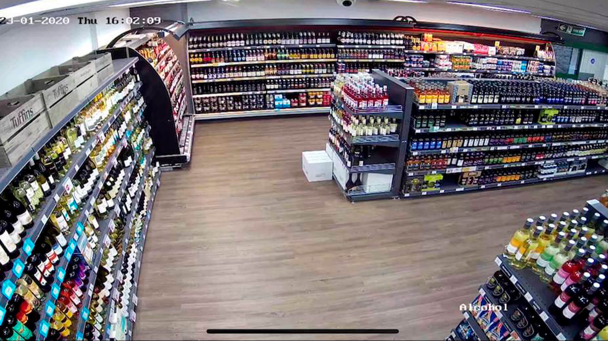

Peace of Mind for Public Spaces: Security Solutions from 333 Security
Creating a safe and secure environment for your patrons, employees, and property is crucial for any shopping center, shop, or public space. At 333 Security Systems, we understand the unique security challenges faced by these locations and offer a comprehensive range of solutions to ensure peace of mind.
Here's how we can help:
- CCTV Surveillance:** Monitor public areas and restricted zones with high-definition cameras with remote access and recording capabilities.
- Intruder Alarm Systems:** Deter and detect unauthorized activity with strategically placed alarms and 24/7 monitoring.
- Perimeter Security:** Secure outdoor areas with security lighting, and motion sensor technology.
- Public Address Systems:** Communicate with patrons and staff effectively during emergencies or for general announcements.
We understand that every public space has its own specific security needs. Whether you manage a large shopping center, a small retail store, or a public park, our experienced consultants will work closely with you to assess your vulnerabilities and develop a customized security plan that meets your budget and requirements.
Contact us today for a consultation and learn how 333 Security Systems can help you create a safer and more secure environment for everyone.
Email public@333security.co.uk | Phone 07447 688333